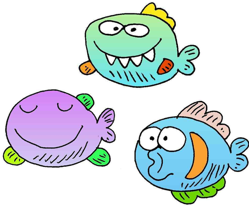

Thank you for coming to do our experiment!
In this experiment, you'll learn to talk with fish. It takes about 5 minutes.
This experiment only works in Firefox, and you'll need speakers or headphones.

To do the experiment in a browser, click here
To do the experiment on an android tablet, set your orientation to PORTRAIT and click here
We don't currently support iOS/iPads, sorry!